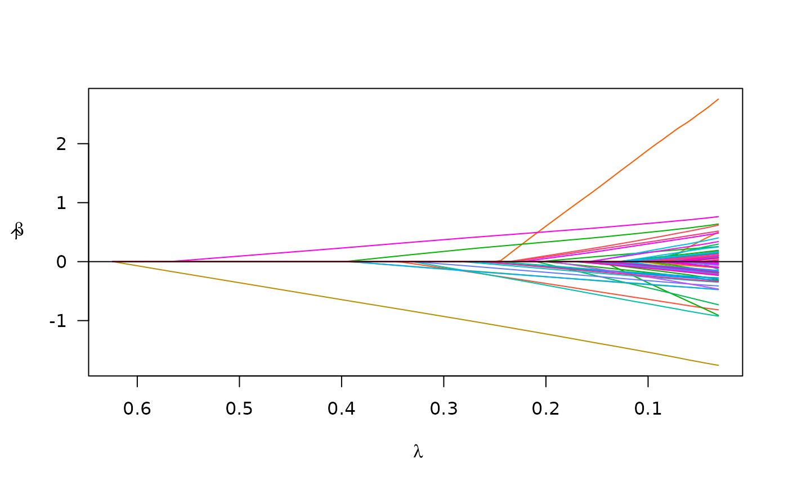

Introduction
plmmr is a package for fitting
Penalized Linear
Mixed Models in R.
This package was created for the purpose of fitting penalized regression
models to high dimensional data in which the observations are
correlated. For instance, this kind of data arises often in the context
of genetics (e.g., GWAS in which there is population structure
and/or family grouping).
The novelties of plmmr are:
Integration:
plmmrcombines the functionality of several packages in order to do quality control, model fitting/analysis, and data visualization all in one package. For example, if you have GWAS data,plmmrwill take you from PLINK files all the way to a list of SNPs for downstream analysis.Accessibility:
plmmrcan be run from anRsession on a typical desktop or laptop computer. The user does not need access to a supercomputer or have experience with the command line in order to fit modelsplmmr.Handling correlation:
plmmruses a transformation that (1) measures correlation among samples and (2) uses this correlation measurement to improve predictions (via the best linear unbiased predictor, or BLUP). This means that inplmm(), there’s no need to filter data down to a ‘maximum subset of unrelated samples.’
Minimal example
Below is a minimal reproducible example of how plmmr can
be used:

summary(cvfit)
#> lasso-penalized model with n=197 and p=101
#> At minimum cross-validation error (lambda=0.2325):
#> -------------------------------------------------
#> Nonzero coefficients: 8
#> Cross-validation error (deviance): 2.12
#> Scale estimate (sigma): 1.455Computational capability
File-backing
In many applications of high dimensional data analysis, the dataset
is too large to read into R – the session will crash for lack of memory.
This is particularly common when analyzing data from genome-wide
association studies (GWAS). To analyze such large datasets,
plmmr is equipped to analyze data using
filebacking - a strategy that lets R ‘point’ to a file on disk,
rather than reading the file into the R session. Many other packages use
this technique - bigstatsr and biglasso are two
examples of packages that use the filebacking technique. The package
that plmmr uses to create and store filebacked objects is
bigmemory.
The filebacked computation relies on the biglasso package by Yaohui
Zeng et al. and on bigalgebra by
Michael Kane et al. For processing PLINK files, we use
methods from the bigsnpr package by Florian Privé.
Numeric outcomes only
At this time, the package is designed for linear regression only – that is, we are considering only continuous (numeric) outcomes. We maintain that treating binary outcomes as numeric values is appropriate in some contexts, as described by Hastie et al. in the Elements of Statistical Learning, chapter 4. In the future, we would like to extend this package to handle dichotomous outcomes via logistic regression; the theoretical work underlying this is an open problem.
3 types of penalization
Since we are focused on penalized regression in this package,
plmmr offers 3 choices of penalty: the minimax concave
(MCP), the smoothly clipped absolute deviation (SCAD), and the least
absolute shrinkage and selection operator (LASSO). The implementation of
these penalties is built on the concepts/techniques provided in the ncvreg package.
Data size and dimensionality
We distinguish between the data attributes ‘big’ and ‘high dimensional.’ ‘Big’ describes the amount of space data takes up on a computer, while ‘high dimensional’ describes a context where the ratio of features (also called ‘variables’ or ‘predictors’) to observations (e.g., samples) is high. For instance, data with 100 samples and 100 variables is high dimensional, but not big. By contrast, data with 10 million observations and 100 variables is big, but not high dimensional.
plmmr is optimized for data that are high dimensional –
the methods we are using to estimate relatedness among observations
perform best when there are a high number of features relative to the
number of observations.
plmmr is also designed to accommodate data that is too
large to analyze in-memory. We accommodate such data through
file-backing (as described above). Our current analysis pipeline works
well for data files up to about 40 Gb in size. In practice, this means
that plmmr is equipped to analyze GWAS data, but not
biobank-sized data.
Data input types
plmmr currently works with three types of data
input:
Data that is stored in-memory as a matrix or data frame
Data that is stored in PLINK files
Data that is stored in delimited files
Example data sets
plmmr currently includes three example data sets, one
for each type of data input.
The
admixdata is our example of matrix input data.admixis a small data set (197 observations, 100 SNPs) that describes individuals of different ancestry groups. The outcome ofadmixis simulated to include population structure effects (i.e. race/ethnicity have an impact on the SNP associations). This data set is available as wheneverlibrary(plmmr)is called. An example analysis with theadmixdata is available invignette('matrix_data', package = "plmmr").The
penncath_litedata is our example of PLINK input data.penncath_lite(data on coronary artery disease from the PennCath study) is a high dimensional data set (1401 observations, 4217 SNPs) with several health outcomes as well as age and sex information. The features in this data set represent a small subset of a much larger GWAS data set (the original data has over 800K SNPs). For for information on this data set, refer to the original publication. An example analysis with thepenncath_litedata is available invignette('plink_files', package = "plmmr").The
colon2data is our example of delimited-file input data.colon2is a variation of thecolondata included in the biglasso package.colon2has 62 observations and 2,001 features representing a study of colon disease. 2000 features are original to the data, and the ‘sex’ feature is simulated. An example analysis with thecolon2data is available invignette('delim_files', package = "plmmr").